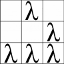

The Glider
The Glider
This image:

is my edit to Eric Steven Raymond’s hugely famous glider image:

Which he explains the purpose of in this post on his site, catb.org. A keen reader might notice that Raymond does not want people to modify his emblem, but I decided not to take his advice. You can find his hacker image plastered all over the opensource community in profiles, favicons, and just about anywhere. Rather than using the same design (although good), I decided I’d like to have an identifiable image wherever I am on the internet. I want it to always be both up to date and mostly unique to me. The image scales pretty well, is simple, and is lightweight.
The other half of the image is a greek letter “lambda” (λ), often used to represent functional programming (due to its use in Church’s λ-calculus).